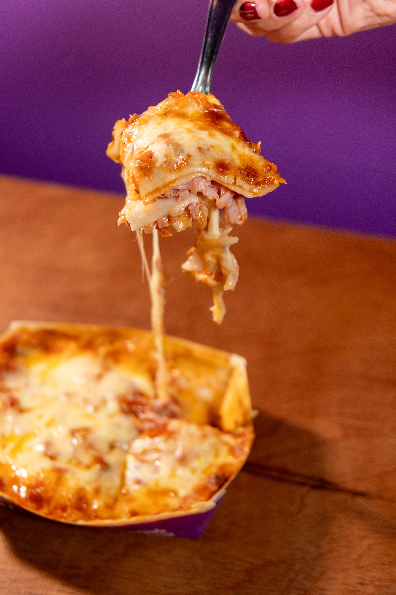

Receta Lasaña
Inicio

Descripción
La lasagna es un plato tradicional de origen italiano cuyas primeras versiones
documentadas se remontan a la Antigua Roma y al periodo medieval en
regiones como Emilia-Romaña y Nápoles. Su nombre proviene del término
griego lasanon (que hacía referencia al recipiente o olla en la que se cocinaba)
y evolucionó a lo largo de los siglos hasta convertirse en una preparación de
capas intercaladas de pasta, salsa y relleno. Existen múltiples variaciones
regionales y modernas —desde versiones vegetarianas hasta recetas con mariscos—,
pero la siguiente preparación corresponde a la lasagna clásica tradicional con
salsa boloñesa y bechamel.
Ingredientes
- Láminas de pasta para lasaña.
- 500 g de carne molida de res.
- 250 g de carne molida de cerdo.
- 1 cebolla cabezona.
- 1 zanahoria.
- 1 rama de apio.
- 2 dientes de ajo.
- 400 g de tomate triturado.
- 2 cucharadas de pasta de tomate.
- 1 litro de leche.
- 80 g de mantequilla.
- 80 g de harina de trigo.
- 300 g de queso mozzarella.
- 150 g de queso parmesano rallado.
- 100 ml de vino tinto.
- Aceite de oliva.
- Sal.
- Pimienta negra.
- Pimienta blanca.
- Orégano.
- Albahaca.
- Nuez moscada.
Pasos
- Preparar los ingredientes: lavar y picar finamente la cebolla, la zanahoria, el apio y los dientes de ajo.
- Sofreír las verduras: calentar aceite de oliva en una sartén y añadir la cebolla, la zanahoria, el apio y el ajo. Cocinar hasta que estén blandos.
- Cocinar la carne: incorporar la carne molida de res y cerdo. Cocinar hasta que esté bien dorada.
- Preparar la salsa boloñesa: añadir el tomate triturado, la pasta de tomate, el vino tinto (opcional), la sal, la pimienta, el orégano y la albahaca. Cocinar a fuego lento hasta obtener una salsa espesa.
- Preparar la salsa bechamel: derretir la mantequilla en una olla, incorporar la harina y mezclar. Añadir poco a poco la leche mientras se remueve para evitar grumos. Agregar sal, pimienta y nuez moscada. Cocinar hasta espesar.
- Preparar la pasta: cocinar las láminas de lasaña según las instrucciones del fabricante, si requieren cocción previa.
- Preparar el recipiente: engrasar una fuente para horno con un poco de mantequilla.
- Formar la primera capa: extender una pequeña cantidad de salsa boloñesa en el fondo del recipiente y colocar una capa de láminas de pasta.
- Agregar los rellenos: cubrir la pasta con salsa boloñesa, salsa bechamel y queso mozzarella.
- Repetir las capas: continuar alternando pasta, boloñesa, bechamel y mozzarella hasta completar el recipiente.
- Finalizar el montaje: cubrir la última capa con bechamel, mozzarella y queso parmesano rallado.
- Hornear: introducir la lasaña en el horno precalentado a 180 °C durante aproximadamente 35-45 minutos, hasta que esté cocida y gratinada.
- Reposar: retirar del horno y dejar reposar entre 10 y 15 minutos para facilitar el corte.
- Cortar en porciones y servir caliente.